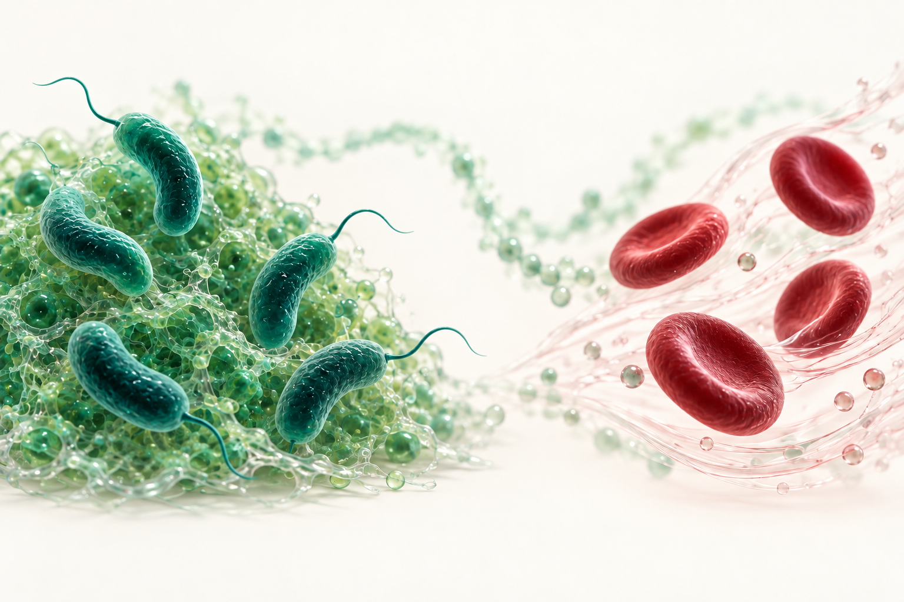

The mechanics of a community
Understanding the organization and material properties of bacterial biofilms.
Discover this theme ↗MOREAU LAB / UNITED ARAB EMIRATES UNIVERSITY
From bacterial communities to red blood cells in flow, we explore how physical forces shape living systems.
Led by Alexis Moreau, Assistant Professor in the Department of Biology at United Arab Emirates University, Al Ain.
Explore our research
OUR SCIENCE
Our interests sit at the interface of biology and physics: how cells organize, how biological materials deform, and how flow influences their behaviour.
Understanding the organization and material properties of bacterial biofilms.
Discover this theme ↗Exploring red blood cell deformation, collective dynamics and filtration in confined flows.
Discover this theme ↗BASED IN AL AIN, UNITED ARAB EMIRATES
FROM THE PUBLICATION RECORD
PNAS 120 (44), e2300095120